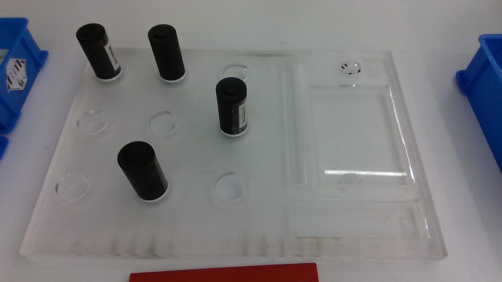

Vision-Guided Robotic Grasping and Sorting System
视觉引导的机器人抓取与分拣系统 · 简体中文 | English
中英文HTML说明（下载后用浏览器打开） · English HTML guide
项目介绍
本项目将目标识别、空间定位、机器人抓取与分类投放连接成一个连续工作流程。头部 Intel RealSense D435 提供实时图像，YOLOv5 模型识别电池外形和颜色，定位模块计算当前目标的位置，再由机械臂与灵巧手完成接近、抓取、提起、投放和返回观察位。

场景说明：2026-10-24四件黑壳批次测试时保存的原始相机画面，展示实际工作区布局。
系统根据实时视觉结果生成目标坐标，并根据工作区选择近处或远处腕姿。当前任务是分拣同规格的直立圆柱测试件：黑色进入正常品盒，红色和白色进入废品盒；方形目标仅识别。
网页控制台提供持续相机画面、自动与单件取放、停止、软件重置、阶段反馈和运行日志。原始定位图像与网页展示视频分开传输；同一目标连续出现至少 2秒 才进入检测统计，短暂闪现和重复刷新不会增加数量。
- 感知：D435 RGB图像、三色圆柱检测和两层支撑面定位。
- 执行：近/远腕姿、下降后预抓、夹持、提起、分类投放和返回。
- 交互：深蓝色网页控制台、局域网访问、实时状态；可选ROS 1桥接。
- 记录：原图、通信、动作结果与文件哈希保留，软件周期数与实际分拣结果分别记录。
底层视觉取放已有四件黑壳连续批次及部分三色取放记录；当前网页版仍等待现场验收。动作周期完成不能直接作为实际抓稳、入正确盒或整机成功率的证明。
项目结构
vision-guided-robotic-sorting/
├── README.md / README.en.md 中英文项目说明
├── requirements-web.txt 网页、相机与推理依赖
├── deployment/
│ ├── run_visual_task_control_v24.py 网页与持续相机服务启动入口
│ ├── visual_task_control_v24.py HTTP接口、任务状态、停止与日志
│ ├── visual_task_dashboard_v24.html 网页控制台
│ ├── visual_live_camera_v24.py D435唯一采集端、同帧图像/识别结果供给
│ ├── visual_detection_confirm_v24.py 同一目标连续存在满2秒的统计确认
│ ├── visual_pick_sort_live_v24_vision.py 目标选择、两层支撑面判断与空间定位
│ ├── run_visual_pick_sort_live_v24.py 自动/单件批次调度
│ ├── visual_pick_sort_v23_worker.py 原机械臂/灵巧手动作子进程
│ ├── task_control_ros_v24.py 可选ROS任务桥
│ ├── CURRENT_RELEASE.json 当前版本、入口与验收状态
│ └── *-files.sha256 原动作及网页运行文件校验清单
├── src/battery_grasp/
│ ├── scripts/yolo_worker.py 独立YOLO/TorchScript推理进程
│ ├── src/battery_grasp/ 推理、规划及ROS公共模块
│ ├── config/ 模型类别阈值与任务配置
│ ├── launch/ ROS节点启动文件
│ └── models/ 模型放置位置；GitHub仅保留说明
├── docs/
│ ├── ASSETS.md 模型、SDK、标定与绑定配置
│ ├── images/head-camera-scene.png 测试回传的头部相机场景预览
│ └── guide.*.html 中英文HTML说明及选中可见彩蛋
└── tools/release/
├── build_runtime_archive.py 按运行清单打包
├── prepare_github.py 导出精简公开源码
└── render_project_guides.py 生成中英文HTML说明
运行关系为：网页按钮 → HTTP任务控制 → 批次调度 → 视觉定位与原SDK动作子进程。相机服务持续供帧，运动阶段保留实时预览。
calibration/保存本机标定和绑定，captures/保存原始会话，publish/保存本地发布副本；这些目录不随GitHub源码上传。deployment/中部分较早版本的脚本和JSON属于当前校验链或来源依据，保留原路径；入口以CURRENT_RELEASE.json为准。
环境配置
硬件与工作条件
| 组件 | 当前配置 |
|---|
| 机器人 | 睿尔曼RM65BI；左臂执行，控制器V1.6.5，SDK API 4.3.1 |
| 灵巧手 | 傲意ROH-AP001，RS485通讯 |
| 相机 | Intel RealSense D435；RGB 1280×720、30fps |
| 测试件 | 断电圆柱/空壳，外径45.8mm、高98mm |
| 工作面 | 已测量的槽底与亚克力板顶面，相差9.6mm |
| 安装关系 | 使用本机标定和近/远腕姿绑定，运行期间头部、板及安装关系保持固定 |
软件与本机资产
运行端使用Linux、Python 3.8及以上，以及NumPy、OpenCV（含ArUco）、PyTorch、PyYAML和pyrealsense2。网页服务使用Python标准库，无需Node.js、前端构建或云端服务。ROS 1仅用于可选任务桥接，网页运行不依赖ROS Master。
已有机器人环境直接复用其Python和依赖。新环境可根据依赖清单安装；PyTorch/CUDA及RealSense驱动需与运行主机匹配，清单不代表已对每种组合完成验收。
python3 -m venv --system-site-packages .venv
source .venv/bin/activate
python -m pip install -r requirements-web.txt
GitHub源码不包含模型权重、设备SDK二进制、现场calibration/或采集数据。启动真机流程前，按资产配置说明恢复本机模型、SDK、标定会话与已验收绑定。不要使用其他机器的标定和示教坐标替代。
使用方法
1. 准备工程
新工作目录可从GitHub获取源码：
git clone https://github.com/VincentCassano/vision-guided-robotic-sorting.git
cd vision-guided-robotic-sorting
已有部署继续使用原目录~/test/battery-d435-preview即可。恢复必要资产后，退出其他抓取程序与相机预览，避免同时占用设备。SHA256清单要求保留源码字节，修改文件后需重新生成对应发布清单。
2. 启动网页
/usr/bin/python3 deployment/run_visual_task_control_v24.py --host 0.0.0.0
服务先启动相机、识别和网页；点击任务按钮后才发起机器人动作。默认尝试打开1440×940普通浏览器窗口，不请求全屏。非Chromium浏览器使用自身窗口设置。
- 本机：
http://127.0.0.1:18081
- 同一局域网：
http://<运行程序的Ubuntu地址>:18081
- 查询Ubuntu地址：
hostname -I
- 只启动服务、不自动打开浏览器：在命令末尾添加
--no-browser。
若使用虚拟环境，将命令中的/usr/bin/python3替换为该环境的python，同时通过--inference-python /绝对路径/python指定模型进程的解释器。
3. 操作任务
| 网页操作 | 实际行为 |
|---|
| 自动工作 | 持续选择合格目标，完成当前批次取放并返回观察位 |
| 单步工作 | 完成一个目标的完整取放流程 |
| 继续识别 | 仅在视觉尚未完成时重新观察，不续接持物恢复动作 |
| 停止工作 | 锁存停止请求，不再启动下一段/下一件；不自动松手或回臂 |
| 重置任务 | 仅清软件任务状态，不清设备错误、不移动机器人 |
黄色框表示等待满2秒的候选，绿色框表示已确认目标，蓝色框表示本轮已锁定目标的采集位置。运动期间画面继续更新，当前抓取坐标保持锁定。检测数统计当前稳定可见目标，每个目标不逐帧累加；动作完成数另行显示。
当前动作参数为移动/对准/转运30%、下降/提起15%；抓取后提起180mm，红白投放后抬40mm，黑色投放后抬80mm。参数属于当前设备与工作区，不能当作通用速度或净空设置。
使用断电测试件，清空整手与含物路径，并现场守急停。网页停止与程序退出均不能证明物理停稳；意外运动或碰撞使用现场硬件急停。关闭浏览器不会关闭服务；在服务终端按Ctrl+C请求停止并等待收尾。
4. 记录与可选接口
记录保存在captures/。退出服务后生成real_task_control_v24_时间.zip，包含界面日志与原机器人会话。不要把空抓走完的动作周期记为实际分拣成功。
HTTP提供GET /api/status、GET /live.mjpg及POST /api/command。ROS桥可在已配置ROS环境的另一个终端运行：
source ~/catkin_ws/devel/setup.bash
/usr/bin/python3 deployment/task_control_ros_v24.py
ROS桥与网页共用同一真机控制服务。完整接口和操作细节见运行说明。
当前范围
当前范围是固定头/板、同规格直立测试件与已测量的两层工作面。任意未知高度、其他规格、方形抓取、右臂协作及实际抓稳/滑落/入框自动闭环尚未完成。依赖与参考材料说明见第三方说明。
世上无难事，只要肯登攀。